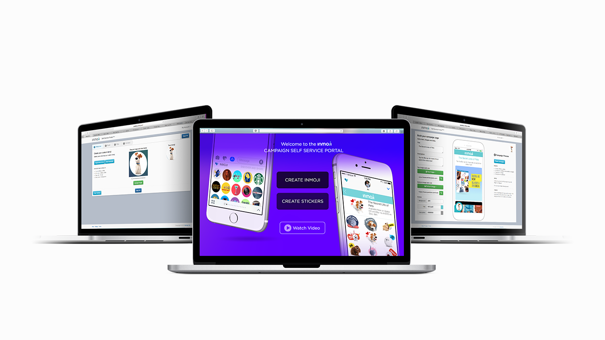
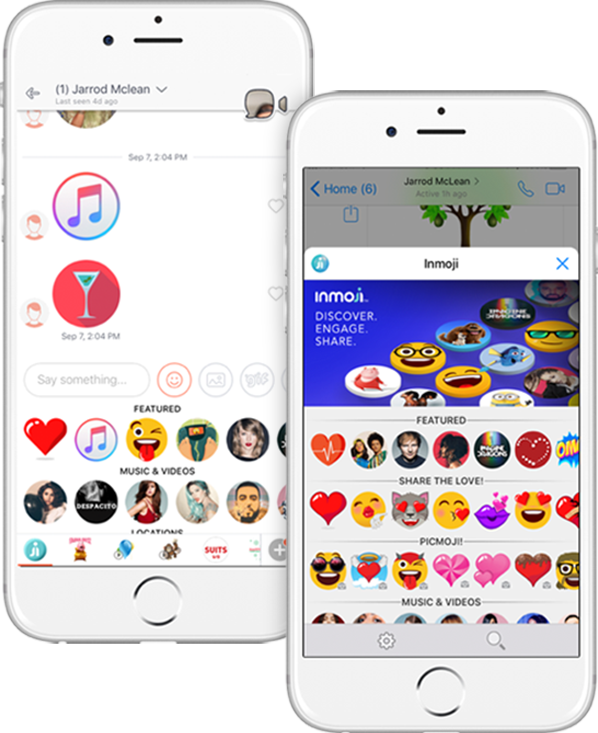
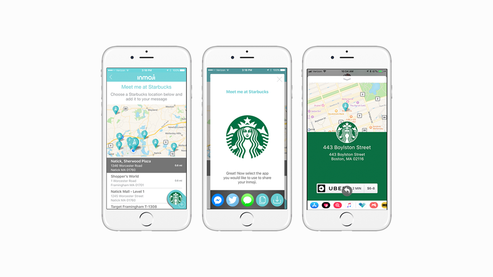
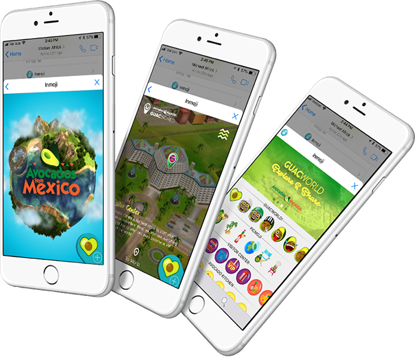
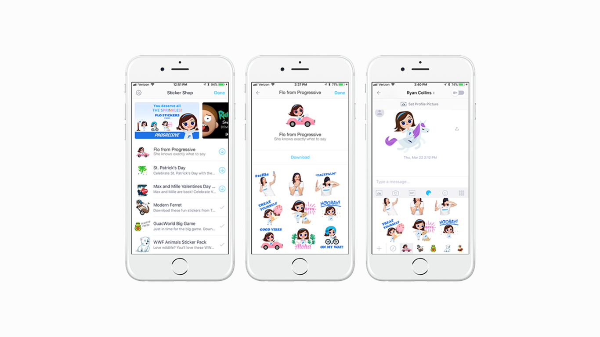
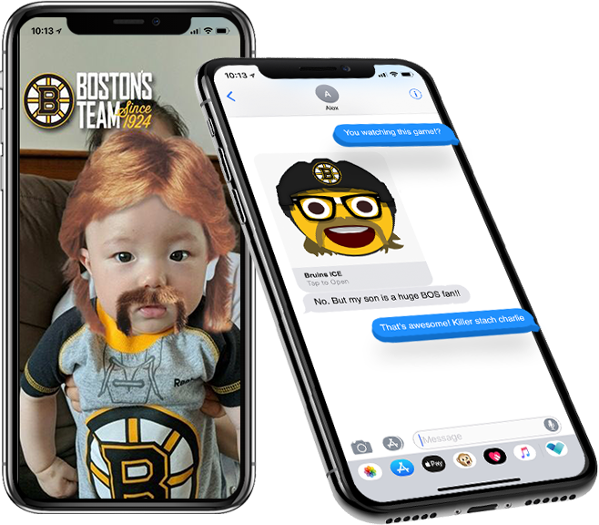

An ad-tech platform that lets brands connect through direct messaging in a non-invasive way — by embedding rich media inside a fully customizable branded icon, selfie filter, or emoji, instead of interrupting the conversation with a traditional ad.
[Ari: replace with the real problem] Traditional display and banner ads were losing effectiveness as more communication moved into messaging apps and iMessage. But messaging is personal — an intrusive ad there does more brand damage than a banner ever could. How might we let brands show up inside messaging in a way that feels like a gift to the conversation, not an ad break?
[Ari: swap in real research findings — brand partner needs, user behavior data] The insight that shaped the whole platform: brand content only works in messaging if it's genuinely useful or fun enough that a person wants to send it to a friend — not something they tolerate. That also meant Inmoji needed to work for many different brands with very different goals (retail locations, entertainment promos, seasonal campaigns), so the platform itself had to be self-serve and flexible rather than custom-built for every partner from scratch.

Inmoji content lives in the same panel where people already pick emojis and stickers, organized into featured, trending, and category sections — so finding a branded Inmoji feels like part of normal messaging behavior, not a detour into an ad experience.

[Ari: confirm/replace — describing the Starbucks location-share flow] For retail partners like Starbucks, Inmoji content could go beyond a sticker — surfacing nearby store locations and letting someone share exactly where to meet, directly inside the message thread.

For bigger campaign moments, Inmoji content expanded into a richer AR-style experience — like the "Avocados from Mexico" branded world — giving a partner more room to tell a story than a static sticker ever could, while still living inside the same shareable, tap-to-open format.

Custom sticker packs — like Progressive's Flo — gave brand characters real personality inside everyday conversations, turning a mascot people recognize from TV into something they'd actually choose to send a friend.

[Ari: add real outcome — number of brand partners, campaign results, user engagement data] The platform launched branded experiences and AR selfie filters for partners spanning entertainment (Spider-Man: Homecoming, Trolls, Minions), music (Ariana Grande), retail (Starbucks, Progressive), and sports — including custom AR filters for regional sports teams that turned fans into walking, sharable content for their own team.

Placeholder: something like — the best branded content in messaging doesn't look like an ad at all; it looks like something a friend would send.
Placeholder: something like — building a self-serve platform instead of one-off custom builds is what actually let the product scale across dozens of very different brand partners.